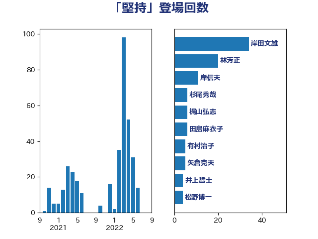

単語「堅持」

| 岸田文雄 | 自由民主党 | 34 回 |
| 林芳正 | 自由民主党 | 20 回 |
| 岸信夫 | 自由民主党 | 11 回 |
| 杉尾秀哉 | 立憲民主党 | 6 回 |
| 梶山弘志 | 自由民主党 | 6 回 |
| 田島麻衣子 | 立憲民主党 | 6 回 |
| 有村治子 | 自由民主党 | 5 回 |
| 矢倉克夫 | 公明党 | 5 回 |
| 井上哲士 | 日本共産党 | 4 回 |
| 松野博一 | 自由民主党 | 4 回 |
| 泉健太 | 立憲民主党 | 4 回 |
| 玉木雄一郎 | 国民民主党 | 4 回 |
| 茂木敏充 | 自由民主党 | 4 回 |
| 藤岡隆雄 | 立憲民主党 | 4 回 |
| 鈴木俊一 | 自由民主党 | 4 回 |
| 北側一雄 | 公明党 | 3 回 |
| 小熊慎司 | 立憲民主党 | 3 回 |
| 小西洋之 | 立憲民主党 | 3 回 |
| 浅田均 | 日本維新の会 | 3 回 |
| 田名部匡代 | 立憲民主党 | 3 回 |
| 田村まみ | 国民民主党 | 3 回 |
| 田村貴昭 | 日本共産党 | 3 回 |
| 美延映夫 | 日本維新の会 | 3 回 |
| 音喜多駿 | 日本維新の会 | 3 回 |
| 高橋光男 | 公明党 | 3 回 |
| 三浦信祐 | 公明党 | 2 回 |
| 下村博文 | 自由民主党 | 2 回 |
| 中西健治 | 自由民主党 | 2 回 |
| 中谷真一 | 自由民主党 | 2 回 |
| 中野洋昌 | 公明党 | 2 回 |
| 佐藤茂樹 | 公明党 | 2 回 |
| 加藤勝信 | 自由民主党 | 2 回 |
| 吉田統彦 | 立憲民主党 | 2 回 |
| 大塚耕平 | 国民民主党 | 2 回 |
| 山口壯 | 自由民主党 | 2 回 |
| 山本剛正 | 日本維新の会 | 2 回 |
| 岩渕友 | 日本共産党 | 2 回 |
| 武井俊輔 | 自由民主党 | 2 回 |
| 清水貴之 | 日本維新の会 | 2 回 |
| 牧山ひろえ | 立憲民主党 | 2 回 |
| 田村憲久 | 自由民主党 | 2 回 |
| 田村智子 | 日本共産党 | 2 回 |
| 田畑裕明 | 自由民主党 | 2 回 |
| 菅義偉 | 自由民主党 | 2 回 |
| 藤川政人 | 自由民主党 | 2 回 |
| 野田佳彦 | 立憲民主党 | 2 回 |
| 長友慎治 | 国民民主党 | 2 回 |
| 馬場伸幸 | 日本維新の会 | 2 回 |
| 伊波洋一 | 無所属 | 1 回 |
| 勝部賢志 | 立憲民主党 | 1 回 |
| 古川元久 | 国民民主党 | 1 回 |
| 古川禎久 | 自由民主党 | 1 回 |
| 古賀之士 | 立憲民主党 | 1 回 |
| 古賀篤 | 自由民主党 | 1 回 |
| 吉田宣弘 | 公明党 | 1 回 |
| 吉良よし子 | 日本共産党 | 1 回 |
| 国定勇人 | 自由民主党 | 1 回 |
| 國場幸之助 | 自由民主党 | 1 回 |
| 城井崇 | 立憲民主党 | 1 回 |
| 塩谷立 | 自由民主党 | 1 回 |
| 大岡敏孝 | 自由民主党 | 1 回 |
| 大石あきこ | れいわ新選組 | 1 回 |
| 大野泰正 | 自由民主党 | 1 回 |
| 太栄志 | 立憲民主党 | 1 回 |
| 宗清皇一 | 自由民主党 | 1 回 |
| 宮口治子 | 立憲民主党 | 1 回 |
| 宮本岳志 | 日本共産党 | 1 回 |
| 小宮山泰子 | 立憲民主党 | 1 回 |
| 小沢雅仁 | 立憲民主党 | 1 回 |
| 小泉進次郎 | 自由民主党 | 1 回 |
| 山井和則 | 立憲民主党 | 1 回 |
| 山本博司 | 公明党 | 1 回 |
| 山際大志郎 | 自由民主党 | 1 回 |
| 岡田克也 | 立憲民主党 | 1 回 |
| 岸真紀子 | 立憲民主党 | 1 回 |
| 川田龍平 | 立憲民主党 | 1 回 |
| 平木大作 | 公明党 | 1 回 |
| 庄子賢一 | 公明党 | 1 回 |
| 後藤茂之 | 自由民主党 | 1 回 |
| 打越さく良 | 立憲民主党 | 1 回 |
| 斎藤アレックス | 国民民主党 | 1 回 |
| 末松義規 | 立憲民主党 | 1 回 |
| 本田顕子 | 自由民主党 | 1 回 |
| 杉本和巳 | 日本維新の会 | 1 回 |
| 柳ヶ瀬裕文 | 日本維新の会 | 1 回 |
| 森本真治 | 立憲民主党 | 1 回 |
| 櫛渕万里 | れいわ新選組 | 1 回 |
| 櫻井周 | 立憲民主党 | 1 回 |
| 江島潔 | 自由民主党 | 1 回 |
| 沢田良 | 日本維新の会 | 1 回 |
| 浜田聡 | NHK党 | 1 回 |
| 浜野喜史 | 国民民主党 | 1 回 |
| 深澤陽一 | 自由民主党 | 1 回 |
| 渡辺猛之 | 自由民主党 | 1 回 |
| 片山さつき | 自由民主党 | 1 回 |
| 玄葉光一郎 | 立憲民主党 | 1 回 |
| 田嶋要 | 立憲民主党 | 1 回 |
| 白石洋一 | 立憲民主党 | 1 回 |
| 石井章 | 日本維新の会 | 1 回 |
| 石井苗子 | 日本維新の会 | 1 回 |
| 石川博崇 | 公明党 | 1 回 |
| 石川大我 | 立憲民主党 | 1 回 |
| 稲田朋美 | 自由民主党 | 1 回 |
| 竹谷とし子 | 公明党 | 1 回 |
| 笠井亮 | 日本共産党 | 1 回 |
| 篠原孝 | 立憲民主党 | 1 回 |
| 篠原豪 | 立憲民主党 | 1 回 |
| 紙智子 | 日本共産党 | 1 回 |
| 義家弘介 | 自由民主党 | 1 回 |
| 舞立昇治 | 自由民主党 | 1 回 |
| 若林健太 | 自由民主党 | 1 回 |
| 藤巻健太 | 日本維新の会 | 1 回 |
| 西村智奈美 | 立憲民主党 | 1 回 |
| 谷公一 | 自由民主党 | 1 回 |
| 赤嶺政賢 | 日本共産党 | 1 回 |
| 赤澤亮正 | 自由民主党 | 1 回 |
| 赤羽一嘉 | 公明党 | 1 回 |
| 足立康史 | 日本維新の会 | 1 回 |
| 重徳和彦 | 立憲民主党 | 1 回 |
| 金子恭之 | 自由民主党 | 1 回 |
| 金子恵美 | 立憲民主党 | 1 回 |
| 金村龍那 | 日本維新の会 | 1 回 |
| 鈴木英敬 | 自由民主党 | 1 回 |
| 鈴木貴子 | 自由民主党 | 1 回 |
| 阿部司 | 日本維新の会 | 1 回 |
| 青木愛 | 立憲民主党 | 1 回 |
| 高木啓 | 自由民主党 | 1 回 |
| 高橋千鶴子 | 日本共産党 | 1 回 |